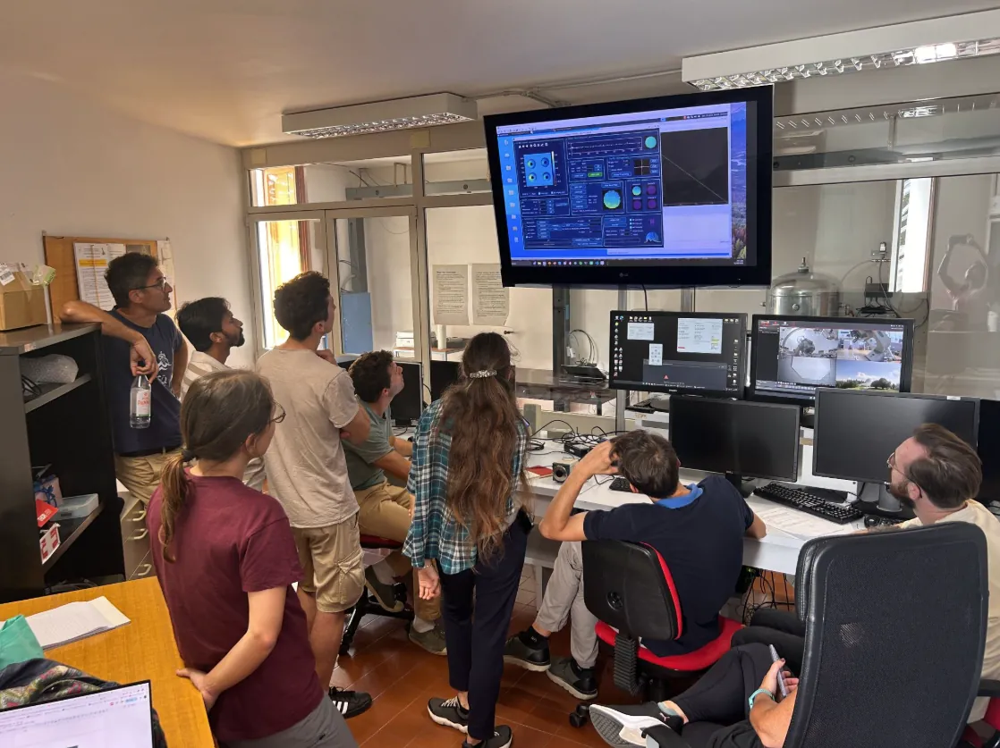

OAO 2026 school: Observing with Adaptive Optics
The 3rd edition of the Observing with AO school. Now with EKARUS in Asiago, Italy. Get full End-to-End experience with the on-sky SCAO system.

Highlights
News, recent results from observations, and anything the whole team should know.
- Official first light of EKARUS at the Copernico telescope.Done
- Common path aligned in Padova. Transmitted wavefront error about 55 nm RMS over the 33 mm DM pupil, mostly coma and secondary astigmatism, to be corrected by the DM. Fast tip-tilt mirror tested and integrated.
- DM468 characterized at Arcetri. Best flat about 6 nm RMS wavefront, small actuator print-through, tip-tilt stroke about 15 µm surface.
See more
- Coudé relay upgraded. New L1 and L3 lenses installed to correct the chromatic focus of the old relay. First seeing-limited PSFs (about 1.8″ seeing) show no strong aberrations from the new relay.
- PAPYRUS decommissioned after reaching almost 65% Strehl at 1450 nm on the T152. Its components were shipped from LAM to Asiago for EKARUS.
Source: EKARUS Newsletter.
They talk about us
- Media INAF · 17 Sep 2026IT Le stelle di Cassiopea nella prima luce di Ekarus
- aise.itIT Inaf: entra in funzione Ekarus, il primo strumento di ottica adattiva montato su un telescopio italiano
- Economia dello SpazioIT Ekarus ad Asiago: ottica adattiva
- CronacaLive · 17 Sep 2026IT Ekarus, primo strumento di ottica adattiva italiano in azione ad Asiago
- LinkedIn · Marseille Adaptive OpticsEN EKARUS post by the Marseille Adaptive Optics group
See also
- EKARUS NewsletterProject page with the development newsletters: news, results and plans.